International Trade Ideas via ADRs
Bolt the international leg onto the trade-idea engine: country PMIs set the bias, on-exchange ADRs are the vehicle, and the micro edge lives in sector comparables.
American Depository Receipts are USD-denominated US listings of foreign companies. Layered on top of the IHS Markit country PMIs, the ~400 tradable on-exchange ADRs stretch the opportunity set from ~2,200 US stocks to ~2,600 — but only if you avoid the trap of confusing a company's listing country with its economic exposure.
The gist
- An ADR is a USD-denominated secondary listing on a US exchange of a company whose primary listing is abroad — US institutions (pension money) get onshore custody, the issuer raises US capital; only ON-EXCHANGE ADRs are tradable, not OTC, and listed options exist only on larger/liquid names.
- ADRs plus the IHS Markit country PMIs expand the opportunity set from ~2,200 US stocks to ~2,600 (~400 ADRs); the finished, scraped opportunity set here is 415 tradable foreign ADRs (topforeignstocks.com, on-exchange, ~May 2021).
- By country the set is skewed to China + mainland Europe + UK ≈ 70%; China alone is ~37% (152 of 415). Full totals: China 152, Europe 93, UK 48, India 13, Japan 13, Australia 12, Chile 12, Israel 11, Brazil 10, Korea 10, Mexico 10, Taiwan 9, Hong Kong 8, S.Africa 7, Peru 4, UAE 2, Turkey 1 = 415.
- Top sectors: Pharma & Biotech 15.42% (64 stocks, mostly untradable defensives), Software & Computer Services 11.08% (35 of 46 Chinese), Banks 6.02% (25 total), Tech Hardware & Equipment 5.78% (24 total, Europe 9 + Taiwan 7), Financial Services 5.30% (18 of 22 Chinese), Travel & Leisure 4.34% (7 of 18 Chinese), Marine Transportation 4.34% (17 of 18 Greek shipping), Industrial Metals & Mining 4.10% (17 total).
- Chinese software & computer-services ADRs are cyclicals and potential accounting frauds — mostly short candidates; Greek shipping is highly cyclical / low market cap so mainly selective longs in expansions; UK & Aussie mega-cap miners (BHP Billiton, Rio Tinto) are shorts in cyclical downturns.
- IHS Markit country PMIs (markiteconomics.com): UK Manufacturing 60.9 = 321-month high, US Manufacturing 60.5 = record high, Vietnam 54.7 = 29-month high, UAE 52.7 = 21-month high; Markit publishes a PMI for most countries including Japan, UK, Brazil and Canada.
- The Markit data feed is institutionally priced — hundreds of thousands of dollars upfront plus tens of thousands per user per year — so retail uses the free press releases and PMI calendar exactly as it uses the ISM.
- The trap: a company's primary-listing country is NOT its economic exposure. Country bias only applies to LOCAL operators; a global operator (e.g. a UK-listed mega-cap miner) is not driven by its home PMI. Ex Pharma & Biotech, the ADR universe is overwhelmingly cyclical, old-economy stocks.
The international leg of the leading-indicator dashboard
- Same job as the US trade-idea engine (money markets, surveys, cyclical commodities), now applied to the right-hand side of the macro dashboard — the international leading indicators.
- If a company has international exposure — whether a foreign ADR in USD or a US company with foreign revenues — you need resources to appraise that exposure to set a portfolio bias.
- The dashboard does three jobs: overall portfolio bias, a geographical/country bias, and individual-equity trade-idea generation (US domestic AND international ADRs).
This lesson is deliberately short — Anton frames it as an exercise in organization, common sense and processing rather than new theory. It extends the ISM-driven single-stock method of the previous video across borders.
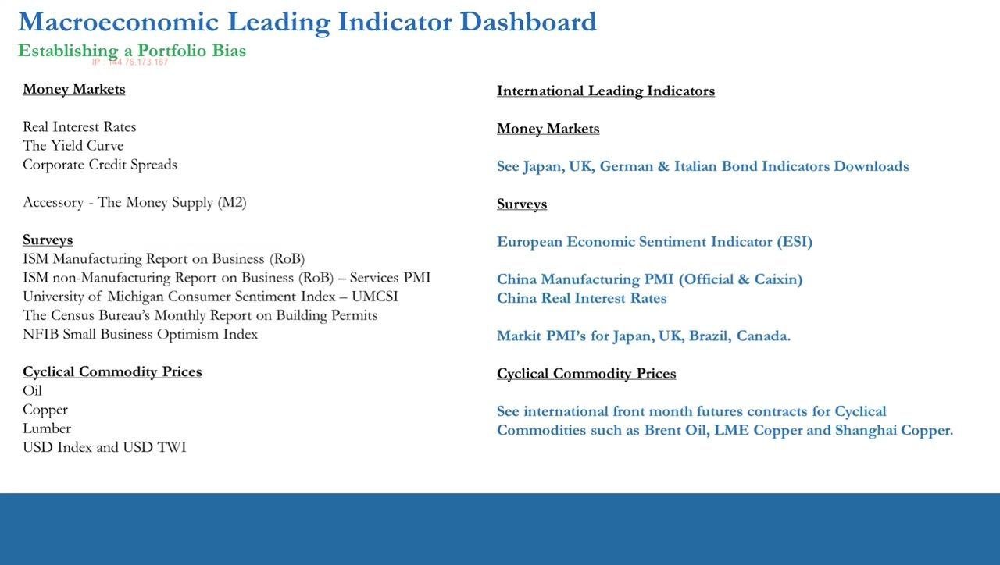
What an ADR actually is
- An ADR (American Depository Receipt) is a secondary listing: the company's primary listing sits abroad in its own currency, and it also lists equity in the US as an ADR denominated in US dollars.
- Purpose is win-win — US institutional investors (most importantly pension money) keep custody onshore in USD (lower risk), and the issuer raises capital in the US.
- ADRs trade both on-exchange and off-exchange (OTC). Traders care ONLY about on-exchange ADRs — the ones accessible on brokerage platforms.
- Many ADRs have listed options, some don't; it's a function of market-cap size and liquidity.
- The IHS Markit PMIs are flagged on the dashboard for Japan, UK, Brazil and Canada, but a Markit PMI exists for most countries.
ADRs are the vehicle that lets a retail trader express an international macro view without leaving a US brokerage account. The on-exchange / OTC distinction is the first filter — OTC names are simply out of scope.
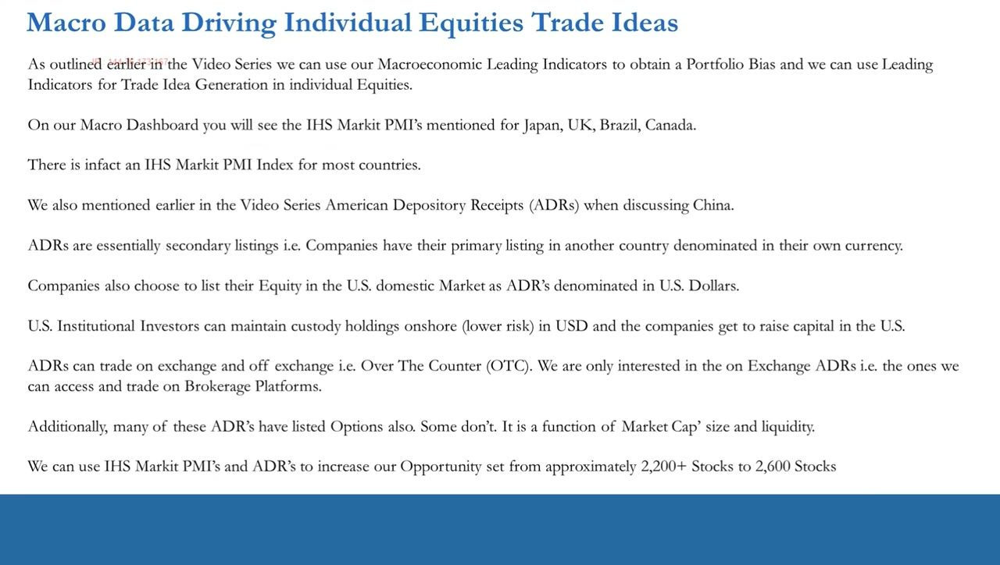
From ~2,200 to ~2,600: expanding the opportunity set
- The US domestic universe has been ~2,200 stocks; adding on-exchange ADRs plus country PMIs lifts the opportunity set to ~2,600 (~400 ADRs).
- The Markit PMIs are used in exactly the same way as the US ISM PMIs.
- But the full global Markit data feed is very highly priced — hundreds of thousands of dollars upfront and tens of thousands per user per year — aimed at investment banks, hedge funds and long-only / long-short managers, not retail.
- IHS Markit is a public company registered in Bermuda with a US listing; retail traders instead lean on the free press releases and PMI calendar.
The quantity of extra names is modest (~400), but Anton's point is qualitative reach: you can now act on foreign macro surprises. The cost reality is why the workflow routes retail to free press releases, mirroring the ISM approach.
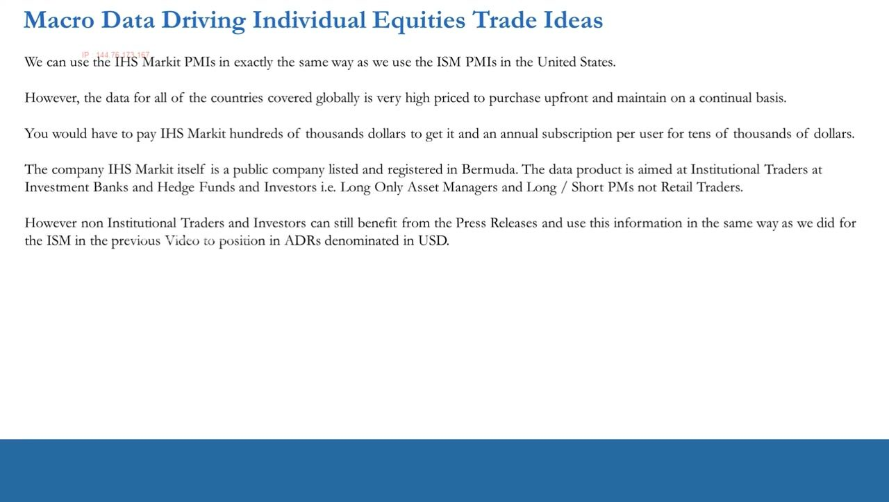
Building the tradable set: scrape, then organize by sector
- Source is topforeignstocks.com/foreign-adrs-list — on-exchange listed (tradable) ADRs split by geographical region first, then by country.
- Within each country you find both on-exchange and OTC names; you select and paste the data into a spreadsheet to keep only the tradable on-exchange ADRs.
- The download's spreadsheet does the initial work; you maintain it yourself, updating roughly once or twice a year since ADR listings rarely change.
- Concentrate on the PROCESS — sources will change; the discipline of organizing by sector is what endures.
The example screenshot is the Complete List of Chinese ADRs as of May 17, 2021 — Chinese names dominate the raw source, which foreshadows the country skew of the finished set.
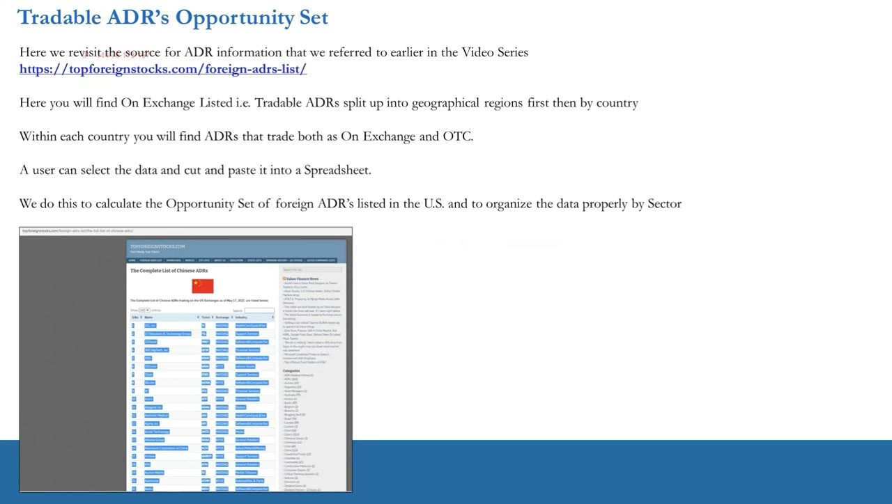
The 415-ADR set by country (and sector)
- 415 tradable foreign ADRs at time of recording, organized in a sector (rows) x country (columns) matrix.
- Country totals: China 152, Europe 93, UK 48, India 13, Japan 13, Australia 12, Chile 12, Israel 11, Brazil 10, Korea 10, Mexico 10, Taiwan 9, Hong Kong 8, S.Africa 7, Peru 4, UAE 2, Turkey 1 = 415.
- China + mainland Europe + UK combine to ~70% of all ADRs; China alone is ~37% (36.63%).
- The matrix is the working artifact — every sector-country cell is a candidate bucket you rank and characterize.
This is the master table. The heavy China / Europe / UK concentration tells you where the ideas will cluster and which country PMIs matter most for setting bias.
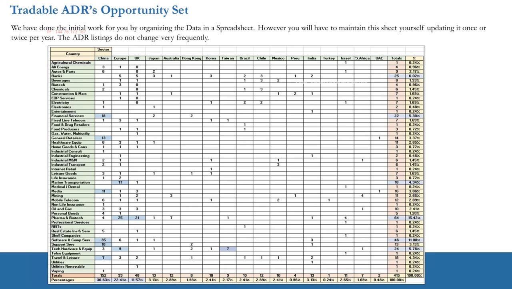
Ranking the largest sector opportunity sets
- Pharma & Biotech 15.42% — mostly untradable defensives.
- Software & Computer Services 11.08% — 35 of 46 stocks are Chinese ADRs.
- Banks 6.02% — Europe & UK (10) plus developed Asia, Japan (3), Korea (3); total 25.
- Tech Hardware & Equipment 5.78% — dominated by Europe (9) and Taiwan (7); total 24.
- Financial Services 5.30% — mostly Chinese, 18 of 22.
- Travel & Leisure 4.34% — mostly China; airlines, hotels & booking sites split fairly evenly.
- Marine Transportation 4.34% — 17 of 18 are Greek shipping stocks.
- Industrial Metals & Mining + Mining 4.10% — dominated by South Africa (4) and Australia (3); total 17.
You establish a country/portfolio bias first, then rank sectors by expected stock performance — growth, ex-growth and defensive characteristics plus EPS-growth profiles — and always do further work on positive and negative outliers within the sector.
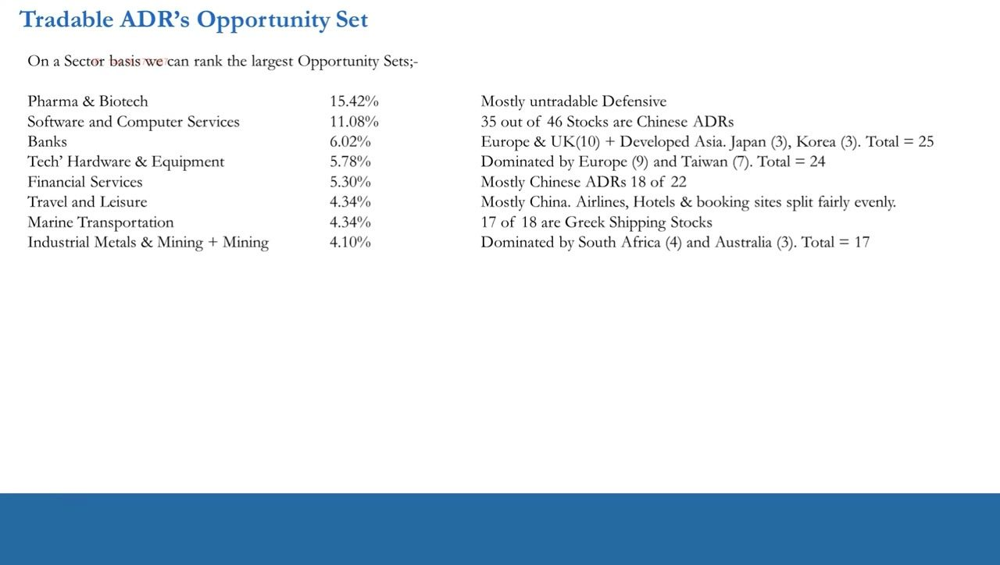
Pharma & Biotech: the biggest set, the hardest edge
- Largest single sector (15.42%, 64 stocks) yet not recommended for retail traders, at least in the first year — the same caution applies to US-domestic pharma/biotech.
- It's probably the hardest sector in the market to hold an edge in even for pros: hedge funds and banks staff PhD biochemists as analysts and PMs.
- Valuation = DCF of the current drug portfolio + probability-adjusted DCF of the pipeline (Phase 1/2/3 FDA approvals, with approval probabilities rising by phase) to an NPV per share.
- Even once you're up and profitable, ask whether the capital is optimized — there's always opportunity cost versus ideas where your edge is clearer.
The point is capital allocation, not exclusion forever: the biggest bucket of names is also where a non-specialist retail trader is least likely to have a durable, repeatable edge.
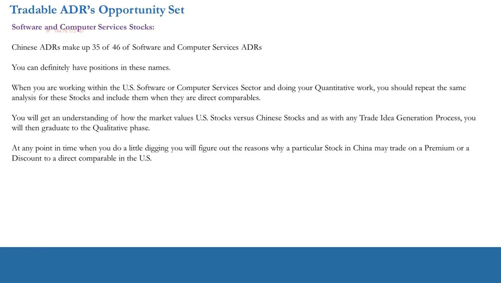
Software & Computer Services, and the China angle
- Chinese ADRs dominate — 35 of 46 software & computer-services ADRs.
- You can definitely take positions here: run the same quantitative work you do on the US sector and include these names when they're direct comparables/competitors.
- You'll learn how the market values US vs Chinese stocks, then graduate from quant to qualitative work.
- Digging reveals WHY a Chinese name trades at a premium or discount to its US comparable — that's where the edge is generated.
The method is comparables-driven: the ADR only earns a place in the book when it sits alongside a US peer, letting the relative valuation and the qualitative reasons for it become the trade thesis.
Banks: net interest margins and zombie banks
- Bank ADRs are mostly Europe, UK, Japan, Korea and Chile.
- Ex some Chilean banks, global retail banking has been dismal over the last 10-20 years as falling interest rates collapsed net interest margins (NIM) — many European banks operate as 'zombie banks'.
- Split names correctly into investment banks, retail banks and hybrids — compare apples to apples, pairs to pairs, not apples to pairs.
- Comparable retail-bank valuations are driven primarily by NIMs and by official-rate vs market-rate differentials.
Banks are interest-rate-cycle sensitive relative to the US, offering both longs and shorts — but only if you characterize each bank's business model correctly before comparing valuations.
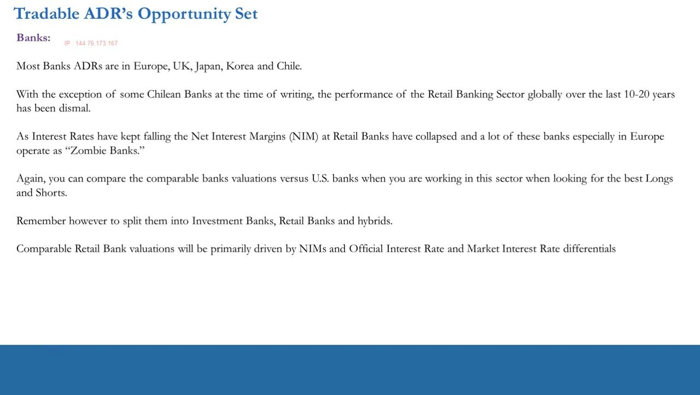
Cyclical sectors: tech hardware, financials, travel, shipping, miners
- Tech Hardware & Equipment (Europe 9 + Taiwan 7): European semis/handset peripherals plus Taiwanese semiconductors — highly cyclical, valuation matters, useful for macro-driven longs/shorts.
- Financial Services (18 of 22 Chinese — consumer loans, mortgage finance, wealth management): edge is questionable given very low market caps and scarce information.
- Travel & Leisure (airlines, hotels, booking sites; many low-cost airline ADRs): cyclical proxies on the economy, good for longs and shorts.
- Marine Transportation: nearly all Greek shipping, mostly low market cap so poor for shorts — the larger-cap names are macro-driven longs in cyclical upswings.
- Industrial Metals & Mining: Chinese aluminium/steel/concrete + European steel; South Africa's are all gold miners; UK & Australia hold the mega-cap diversified miners BHP Billiton and Rio Tinto — gold names are USD/interest-rate sensitive, mega-cap diversified miners can be shorts in downturns.
This is the cyclical core of the ADR universe. Each sub-sector is characterized by its dominant geography and its use case (long vs short, cyclical driver), and each is worked as a comparable set against US peers.
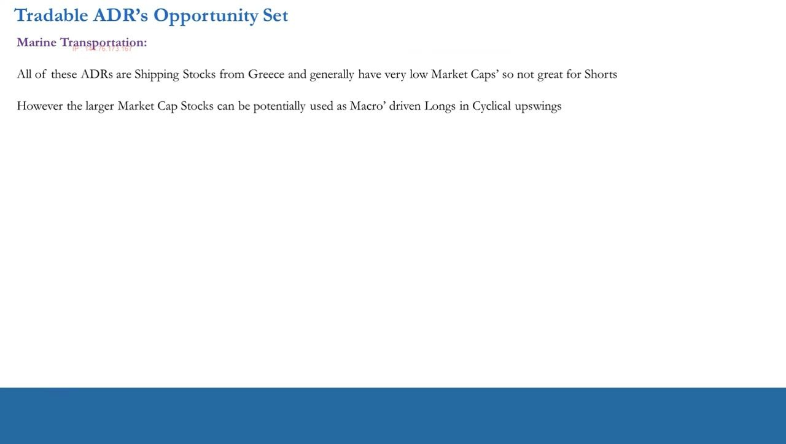
IHS Markit country PMIs: the free data source
- Country data comes from markiteconomics.com — go to the PMI calendar for upcoming releases and PMI releases for the past ones, indexed by month.
- Read the press releases to judge whether manufacturing and services are growing, slowing or contracting in each country.
- Ticker examples: UK Manufacturing 60.9 (321-month high), US Manufacturing 60.5 (record high), Vietnam 54.7 (29-month high), UAE 52.7 (21-month high).
- Mostly you get headline data, sometimes a more detailed breakdown and commentary — enough to feed the macro dashboard and marry to your micro work.
This mirrors the ISM workflow exactly: the free calendar-plus-press-release loop substitutes for the institutionally-priced data feed, and the readings set the country bias that the micro work then acts on.
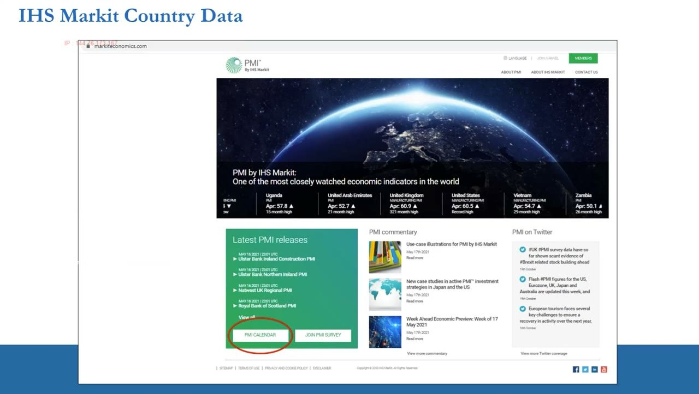
Mapping PMIs to ADR trade ideas — and the trap
- Chinese software & computer-services ADRs → cyclicals and potential accounting frauds (mostly shorts).
- Europe / UK / Japanese / Chilean banks → interest-rate-cycle sensitive vs the US (longs and shorts).
- All travel & leisure → airlines/hotels/booking cyclical proxies (longs and shorts); Greek shipping → highly cyclical, low market cap, selective longs in expansions.
- South African & European gold stocks → USD and interest-rate sensitive; UK & Aussie mega-cap miners → shorts in cyclical downturns; all other ADRs → useful for direct comparable valuations vs US stocks.
- THE TRAP: primary-listing country is NOT economic exposure. Country bias applies only to LOCAL operators; a global operator (e.g. UK-listed mega-cap miner) is not driven by its home PMI.
Ex Pharma & Biotech, the ADR universe is overwhelmingly cyclical, old-economy stocks. Establish a country bias only where the company is a local operator, then win at the micro level on sector comparables, revenue/earnings geography, growth profiles, outliers and catalysts.
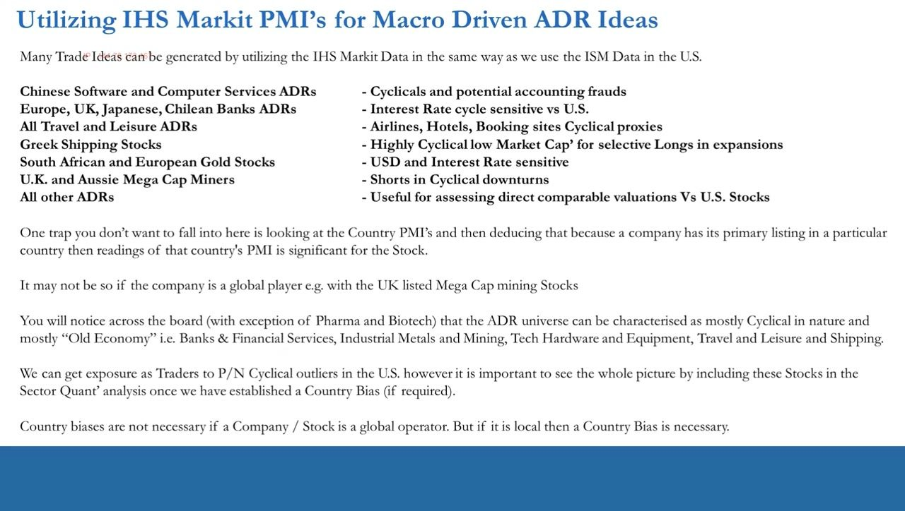
Recap: marry the macro to the micro, get the purest play
- Do BOTH: country analysis from Markit PMIs, overlapped with sector and single-stock analysis — organized at both the country and sector level.
- There's no per-country, per-sector macro data, so the sector edge is micro: company valuations for ADRs relative to US peers plus the geographic distribution of revenue and earnings.
- Identifying a real macro trend change is worthless if the position isn't directly exposed to it — get as pure a play as possible so the micro shows up in the stock's revenue and earnings.
- It comes down to being organized, using common sense and joining the dots properly — the next videos move on to timing (technical analysis and price action).
The closing discipline is representativeness: a correct macro call only pays if the chosen ADR genuinely captures that economy's driver in its fundamentals, not merely its listing flag.
Glossary
- ADR (American Depository Receipt)A USD-denominated secondary listing on a US exchange of a company whose primary listing is abroad; lets US institutions hold the name onshore in dollars while the issuer raises US capital.
- On-exchange vs OTC ADROn-exchange ADRs trade on regular exchanges and are accessible on brokerage platforms (the only tradable ones here); OTC ADRs trade over-the-counter and are out of scope.
- IHS Markit PMIPurchasing Managers' Index published by IHS Markit (markiteconomics.com) for most countries; the full data feed is institutionally priced, but headline press releases and the PMI calendar are free.
- Country / portfolio biasThe directional lean set from country macro (PMIs) before micro work; necessary for LOCAL operators, not for global operators whose exposure spans many economies.
- The listing-country trapAssuming a company is driven by the PMI of its primary-listing country; false for global operators (e.g. a UK-listed mega-cap miner with globally diversified revenues).
- NIM (Net Interest Margin)The spread a bank earns between lending and funding rates; falling global rates have compressed retail-bank NIMs, creating 'zombie banks', and drive comparable retail-bank valuations.
- Pipeline (probability-adjusted DCF)For pharma/biotech, the value of unapproved drugs at FDA Phase 1/2/3, each DCF weighted by an approval probability that rises by phase; added to the current-portfolio DCF for NPV per share.
- Old-economy / cyclicalThe dominant character of the ADR universe (ex pharma & biotech): banks, financial services, metals & mining, tech hardware, travel & leisure, shipping — sectors that swing with the economic cycle.